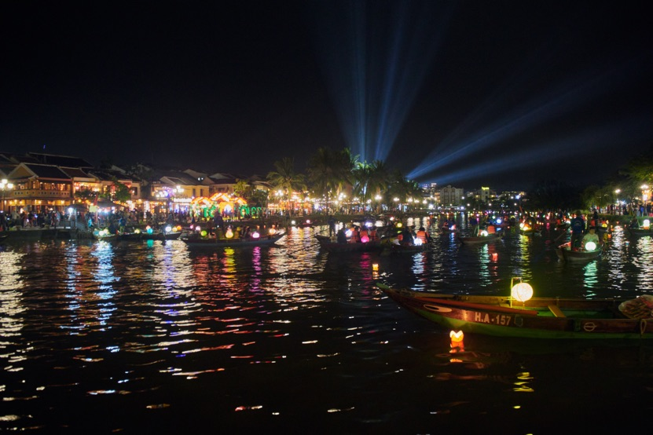

Renting guides
What Are the Top 5 Places to Visit in Da Nang?
Five sights, what each costs in 2026, and how to fit them into one weekend.
Bài viết này hiện chỉ có bản tiếng Anh. Menu và phần điều hướng đã chuyển sang tiếng Việt. Alice nói tiếng Việt và tiếng Anh, nhắn tin cho cô nếu bạn cần giải thích bằng tiếng Việt.
Key takeaways
- The top 5 places to visit in Da Nang are the Marble Mountains, the Son Tra peninsula and its Lady Buddha, the Dragon Bridge at night, Ba Na Hills and Hoi An Ancient Town.
- All five are within about an hour of the beach districts, and four of them cost less than $5 to enter.
- Ba Na Hills is the expensive one: a cable car ticket costs about 950,000 to 1,000,000 dong in late 2026, and since January it is valid for three days in a row.
- The Dragon Bridge breathes fire and water at 9pm on weekend nights, for about 15 minutes.
- Hoi An has been part of Da Nang since July 2025. A ticket to the old town costs 120,000 dong for foreign adults.
What are the top 5 places to visit in Da Nang?
The Marble Mountains, the Son Tra peninsula, the Dragon Bridge, Ba Na Hills and Hoi An Ancient Town. They cover caves and pagodas, a mountain forest by the sea, the city at night, a theme park in the clouds and a centuries-old trading port, and you can reach every one from the beach in an hour or less.
- Marble Mountains: caves, pagodas and a view over the coast, 15 minutes from the beach.
- Son Tra peninsula and the Lady Buddha: forest roads, rare langurs and a 67 metre statue above the sea.
- Dragon Bridge: fire and water from the dragon's head at 9pm on weekend nights.
- Ba Na Hills and the Golden Bridge: a long cable car ride to cooler air and the bridge held up by stone hands.
- Hoi An Ancient Town: the UNESCO listed old town and its lanterns, part of Da Nang since 2025.
| Place | From the beach | Entry | Best time |
|---|---|---|---|
| Marble Mountains | 15 minutes | 40,000 ₫, lift extra | Morning |
| Son Tra and Lady Buddha | About 20 minutes | Free | Early morning |
| Dragon Bridge | About 10 minutes | Free | 9pm, weekend nights |
| Ba Na Hills | 45 to 60 minutes | About 950,000 to 1,000,000 ₫ | Opening time, weekdays |
| Hoi An Ancient Town | 40 to 45 minutes | 120,000 ₫ | Late afternoon into night |
The beach itself is the sixth, and you don't need a plan for it. My Khe runs the length of the city's east side and is free every day. Our guide to the weather month by month shows when the sea is calm enough to swim.
All five are within an hour of the beach, and four cost less than $5 to enter.
1. Marble Mountains: why visit?
For caves full of shrines and the view from the top, 15 minutes from the beach. The Marble Mountains are five limestone and marble hills, each named after an element. Thuy Son, the largest, has pagodas, stone stairways and Huyen Khong cave, where morning light falls through a hole in the roof onto a seated Buddha.
Entry to Thuy Son costs 40,000 dong. A lift on the east side saves the climb for about 15,000 dong each way, and Am Phu cave at the base has its own ticket. The site opens around 7am and closes around 5:30pm. Go early, before the tour buses and the midday heat, and wear shoes with grip, because the cave floors are wet and uneven.
The hills sit in Ngu Hanh Son, the district with most of the city's villas. Our guide to renting a house or villa in Da Nang covers the homes around them.
2. Son Tra peninsula and the Lady Buddha: what is there?
Forest, empty roads, sea views and Da Nang's Lady Buddha. Son Tra is the green mountain at the north end of the beach, about 10 km from the centre. Linh Ung pagoda stands on the peninsula above the sea, with a white statue of the Bodhisattva of Mercy about 67 metres tall, looking out over the bay. Entry to the pagoda is free.
Further up, the forest is home to red-shanked douc langurs, a rare monkey you may spot in the trees if you go early and quietly. Go by Grab car or a confident motorbike rider, since the upper roads are steep, and bring water, because there are few shops past the pagoda.
The streets at the foot of the peninsula are among the quietest places to live near the beach. Our Son Tra and My An comparison explains who each side suits.
3. Dragon Bridge: when does it breathe fire?
At 9pm on weekend nights, for about 15 minutes. The bridge's operator told Tuoi Tre News in August 2026 that the show normally runs on Friday, Saturday and Sunday, and the city adds extra nights for holidays such as National Day. The dragon's head breathes fire first, then sprays water over the crowd, so stand back if you want to stay dry.
The best views are from the riverbank on the Son Tra side, near the head, or from the Bach Dang riverside walk opposite. Arrive by 8:30pm on a Saturday to get a spot. The rest of the week the bridge is lit in changing colours every night and costs nothing to see.
Our guide to Da Nang nightlife has the rooftop bars along the river for after the show.
4. Ba Na Hills and the Golden Bridge: is it worth it?
Yes, if you go once and go early. Ba Na Hills is a resort and theme park on a mountain about 40 km west of the city, reached by one of the longest cable car rides in the world. At the top are the Golden Bridge, held up by two giant stone hands, a copy of a French village, gardens and an indoor fun park, with air several degrees cooler than the coast.
It is also the most expensive day on this list. In late 2026 the cable car ticket costs about 950,000 to 1,000,000 dong for an adult, depending on the source, and from January 2026 each ticket is valid for three days in a row. Check the price on the Sun World website before you go. Be at the cable car when it opens, on a weekday if you can, because the Golden Bridge is shoulder to shoulder by late morning.
5. Hoi An Ancient Town: is it part of Da Nang now?
Yes. Since Da Nang merged with Quang Nam province on 1 July 2025, Hoi An's old town has been inside the same city, about 30 km and 40 to 45 minutes by car from An Thuong. The UNESCO listed town has merchant houses, assembly halls, tailors, the Japanese covered bridge and lanterns on the Thu Bon River after dark.

A ticket to the old town costs 120,000 dong for a foreign adult and covers entry to several of the historic houses. Arrive in the late afternoon, walk the streets while they are quieter, eat by the river and stay for the lanterns. Our guide to living in Da Nang or Hoi An compares the two as places to live.
How can you see all five in one weekend?
Split them by direction. Spend Saturday in the south and Sunday in the west and the north.
- Saturday morning: the Marble Mountains, from opening time, while the caves are cool.
- Saturday afternoon and evening: drive on to Hoi An, walk the old town and stay for the lanterns.
- Sunday morning: Ba Na Hills, at the cable car when it opens.
- Sunday late afternoon: Son Tra and the Lady Buddha, when the heat has gone.
- Sunday 9pm: the Dragon Bridge fire show.
Grab cars cover every leg, and a driver for the day is easy to book if you would rather not wait between stops.
Where should you live to be close to all five?
My An and An Thuong, the grid of streets behind the middle of My Khe beach. From there the Marble Mountains are 15 minutes south, the Dragon Bridge 10 minutes west, Son Tra about 20 minutes north and Hoi An under an hour. It is also the most walkable part of the city, with cafes, restaurants and the beach a few streets apart.
If you are staying longer than a holiday, our guide to where to live in Da Nang compares the five main areas on rent, noise and flood risk.
Frequently asked questions
What are the top 5 places to visit in Da Nang?
The Marble Mountains, the Son Tra peninsula with the Lady Buddha at Linh Ung pagoda, the Dragon Bridge at night, Ba Na Hills with the Golden Bridge, and Hoi An Ancient Town. All five are within about an hour of the beach districts.
When is the Dragon Bridge fire show in Da Nang?
At 9pm on weekend nights, for about 15 minutes. The bridge operator said in August 2026 that the show normally runs on Friday, Saturday and Sunday, with extra nights on public holidays. The head breathes fire first, then sprays water.
How much does Ba Na Hills cost in 2026?
A cable car ticket costs about 950,000 to 1,000,000 dong for an adult in late 2026, which includes the Golden Bridge and the attractions at the top. From January 2026 each ticket is valid for three consecutive days. Check the price on the Sun World website before you go.
How much is the Marble Mountains entrance fee?
40,000 dong to enter Thuy Son, the main mountain. The lift costs about 15,000 dong each way, and Am Phu cave at the base has a separate ticket. The site is open from about 7am to 5:30pm.
Is Hoi An in Da Nang?
Yes, since 1 July 2025, when Da Nang merged with Quang Nam province. Hoi An's old town is about 30 km and 40 to 45 minutes by car from the An Thuong beach area. The old town ticket costs 120,000 dong for foreign adults.
Where should I stay in Da Nang to visit the main sights?
My An and An Thuong, behind the middle of My Khe beach. The Marble Mountains are 15 minutes away, the Dragon Bridge about 10, Son Tra about 20 and Hoi An under an hour, and the area is easy to explore on foot.